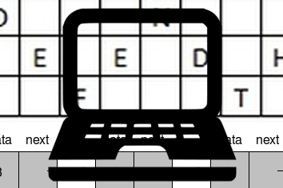
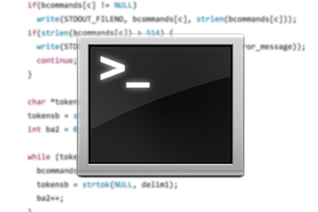
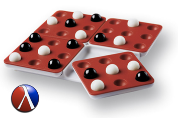

Take a look at some stuff I've done.
I wrote up a collection of coding practice problem solutions using Python 2. These are solutions to various questions that I have encountered in interviews, in interview workshops, and on the internet.
I wrote a fully functional terminal shell for a Computer Systems class in C. The commands cd, pwd, and ls are built-in, and it also supports the redirection of input and output.
My first ever project that I made for my first ever CS class is a simulation of Pentago. Pentago (INSERT LINK) is a 2-player game similar to tic-tac-toe, but with a twist (heh). My version is written in Racket and gives you the option of playing against a very basic AI.
I currently attend the University of Chicago. I have taken a variety of different classes here, some of which have really challenged me, and all of which have caused me to learn more. When psets and exams don't dominate my life (and sometimes, even when they do), I help design the Chicago Maroon, volunteer with the University of Chicago Medicine's TLC program, run impromptu debate rounds in the Chicago Debate Society, and attend ACM-W meetings. UChicago has shown me the value of intellectual inquiry, and the importance of lifelong learning.
I moved to Hong Kong after spending 10 years in a small suburb in the Midwest, which was right in time for high school. West Island School presented a very new experience with its British curriculum and diverse students, staff, and faculty. English literature and Economics were my favorite subjects, and I my four years of varsity cross country definitely helped with building character. I still visit Hong Kong at least annually since my family lives there, and consider it my favorite city.